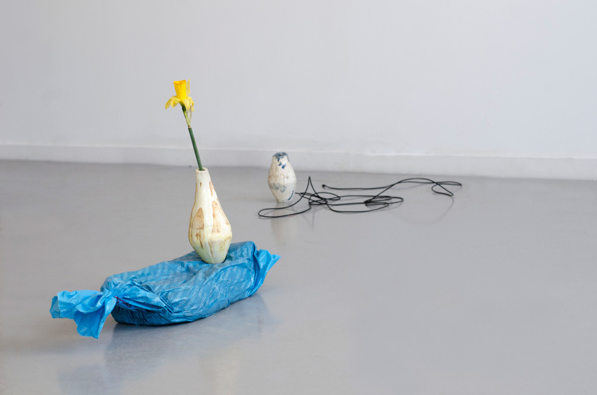
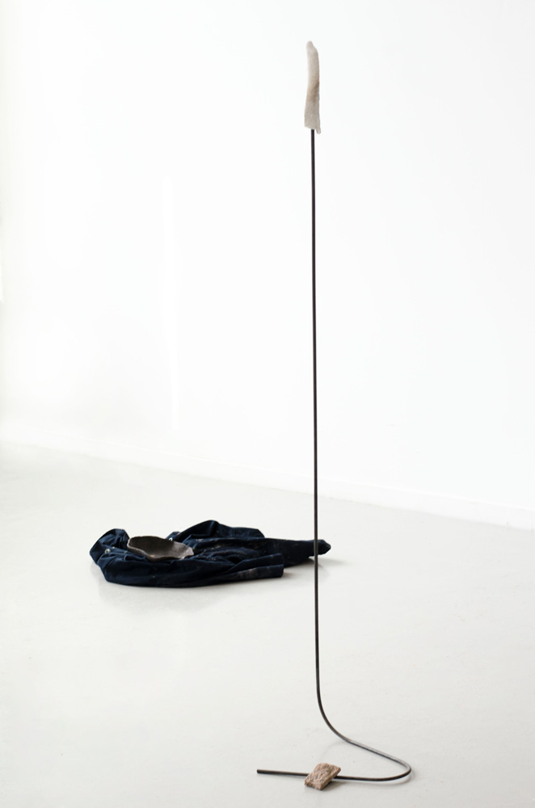

(2020)
stoneware, dinosaur fossil, steel, boiler suit, casting wax, correnie granite, ceramic shell

Those most stubborn of human creations – plastic, pottery and glass – are all made for holding.
Vessels are made, and they hold and keep until they are emptied. I have a lot of empty plant pots that have been abandoned after being outgrown, like seashells. While plants germinate, bloom and die, the plastic and ceramic that hold them hardly changes. Mould and beetles will metabolise the cellulose of the stem, leaves and roots, but ceramic endures as it’s molecular structure is closer to a fossil than a plant.
There are vessels which millennia later still hold the last grains, not-digested-yet, like the last meal in a bog man’s stomach. Some are stained with smoke or wine, carrying the residue of what was once useful, of could-be sustenance. There are vessels that hold the sounds we throw into them too. That already-gone moment of sound’s shape might yet echo when we put our ear to the rim.


The weight of my body rises to meet me uneasily as the soft shape of a thing presses, then crumbles under my right sole. It crushes the way a biscuit might disintegrate underfoot, but somehow with a squeak, the clay turns to dust.
I turn around to inspect my misplacement and tread soft grey across the floor. It leaves a matte print of my pad, and as I crouch down, using my hands to gather it up, small particles scatter and settle in the spaces between the boards and compress against the sides of my palms. Little channels of powder.
I need to fix the hoover.
I take off my socks, rolling them up with the clay inside, and chuck them in the washing basket. I pad through to the kitchen to find and soak a cloth to wipe up what I can. A
dustpan and brush will only move the stuff around and get it in the air. A damp cloth works.